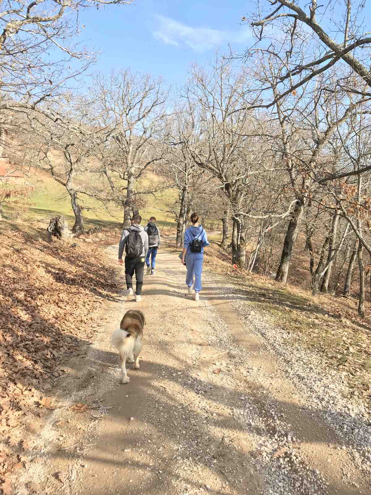
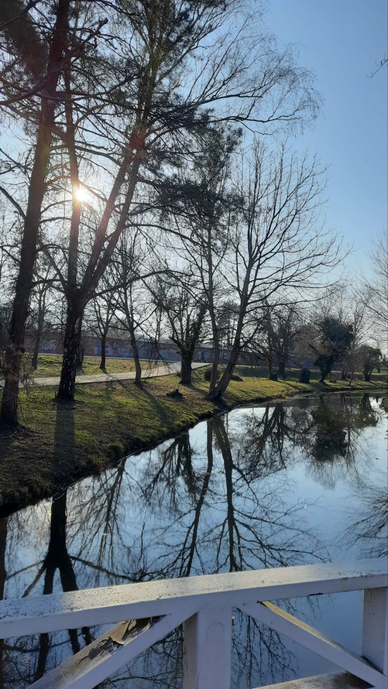
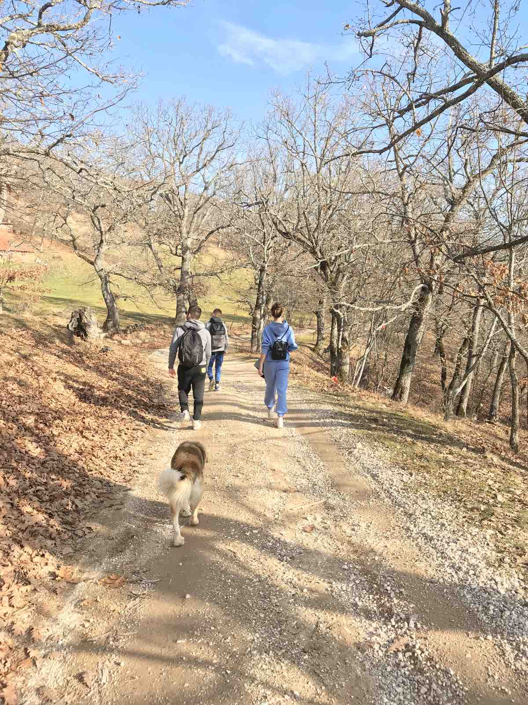
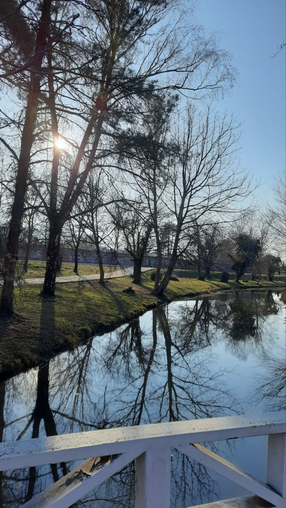

-
Kozjak Lake
After a short hike you can have this beautiful view and a gorgeous sunset/sunrise from the top overlooking Lake Kozjak. It is a perfect picnic spot as well.
-
City Center
Macedonia Square is at the heart of the City Centre of Skopje. There are plenty of fountains and statues to look at along with plenty of shops of restaurants.
-
Mavrovo
It’s a large park with gorgeous scenery, sheer cliffs, challenging hikes and skiing. Just driving through is enjoyable. Many tiny villages are also in the area and worth a look.
 



-
Canyon Matka
Morning around 10 am, it is the perfect time to enjoy the canyon. Imagine, you are cruising the canyon on your own, soaking up the magical views and having the lake to yourself.
-
Mountain Skopska Crna Gora
Skopska Crna Gora is also known as Holy Mountain, due to the presence of churches and monasteries in most of the territory. Skopska Crna Gora offers excellent hiking trails, especially for mountain biking and downhill.
-
Central Park
This is a large park, with many benches for a good rest, many walking paths, children's playgrounds, fountains, sculptures, a lake, and even a beach area.